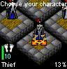

Godhood
The Eye of Ascension
Previous
Next
Getting Started
Starting a New Game
To start a new game simply select
Begin Quest
option from the introduction screen. You'll find the game starts in a room with four characters, these are the fighter, thief, magician, and cleric. Each has his or her own strengths and weaknesses. Just keep selecting
End Turn
until you find the character that you want, then choose the
Enter - Portal
action, and the game will begin. 
Note
There can only ever be one game in progress at a time. This means that if you have saved a game, starting a new game will overwrite that game.
Saving a Game
To save a game choose the
System
action from the action menu. Typically it will be the last action. This will open up the
System Menu
, to save, simply select the
Save
option here. Once you have saved you'll be returned to the introduction screen.
Continuing a Game
To load a previously saved game start
Godhood
and select
Load Saved Game
, if there is a saved game in progress it will be loaded. Note that loading a given saved game can only be done once, if you want to load it again, you'll have to save it again.
If your phone gets turned off in the middle of a game you should be able to recover your game by selecting the
Load Saved Game
option once you've turned your phone back on.
Quitting a Game
Sometimes you need to quit a game, maybe you've been turned into a piece of flora, or perhaps you accidentally dropped the Eye of Ascension down a bottomless chasm. To quit, choose the
System
action from the action menu, then select
Quit
. You'll be deposited back at the introduction screen.
Previous
Next